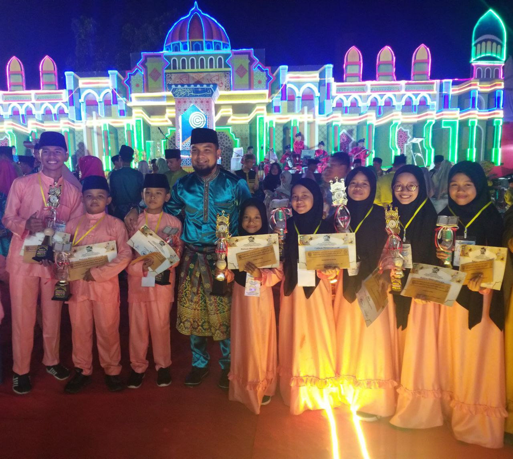

.png)
Prestasi
-

Ani Mardhatillah, mahasiswa Teknik Informatika Juara 1 Lomba MTQ Kecamatan
Ani Mardhatillah, mahasiswa Teknik Informatika UNRI menjadi juara 1 pada lomba Musabaqah Tilawatil Quran (MTQ) ke IV Tingkat Kecamatann Bathin Solapan, Kabupaten Bengkalis. Acara ini diselenggarakan mulai tanggal 16-23 September 2022 di Kantor Camat Bathin Solapan. Ketua Prodi Teknik Informatika, Dr. Feri Candra turut mengapresiasi perolehan ini “Capaian ini sangat positif, dari Prodi mendukung berbagai...
-

Dzikri Armansyah; Mahasiswa Teknik Informatika UNRI Juara 1 Bujang Dara Kampar
Dzikri Armansyah, mahasiswa Teknik Informatika UNRI menjadi juara dalam ajang kompetisi Bujang Dara Kabupaten Kampar. Bersama dengan pasangannya Nur Winda yang merupakan Putri asal Kecamatan Bangkinang Kota menjadi Bujang Dara Kabupaten Kampar tahun 2019. Kedua pasangan ini resmi terpilih jadi juara di acara Malam Puncak Bujang Dara Kabupaten Kampar yang diadakan di aula Kantor Bupati Kampar, Minggu...
-

Hakim Ata Attaturk; Mahasiswa Teknik Informatika UNRI Juara 4 Bujang Dara Pekanbaru
Sebanyak 24 finalis Bujang Dara Pekanbaru 2019 memperebutkan status Bujang Dara Terbaik pada Malam Puncak Pemilihan Bujang Dara yang dilaksanakan di SKA Co Ex, Sabtu 6 April 2019. 24 finalis Bujang Dara Kota Pekanbaru finalis tersebut merupakan putra dan putri terbaik hasil seleksi yang telah dilakukan tim dari Dinas Kebudayaan dan Pariwisata (Disbudpar) Kota Pekanbaru. Sebagaimana...
-

Tim Universitas Riau 10 Delegasi Terbaik di Ajang Lomba Poster Nasional./h2>
Surabaya – Sebanyak 3 mahasiswa Universitas Riau mewakili Riau dalam ajang Lomba Poster Nasional yang ditaja oleh BEM FKM Universitas Airlangga Surabaya. Kegiatan ini awalnya dimulai melalui pengirinan poster kepada panitia yang akan menseleksi poster yang dikirim oleh peserta yang berasal dari seluruh Indonesia. Dari seluruh poster yang masuk, panitia hanya akan mengambil poster 10...
-

Abu Hanifah; Mahasiswa Teknik Informatika UNRI Juara 1 Lomba Instruktur Komputer Provinsi Riau dan Harapan 3 Tingkat Nasional
Abu Hanifah, mahasiswa Teknik Informatika UNRI menjadi perwakilan Provinsi Riau dalam ajang kegiatan Apresiasi GTK PAUD dan Dikmas Berprestasi Tingkat Nasional Tahun 2018. Sebelumnya Abu Hanifah berhasil mendapatkan Juara 1 Umum pada kategori lomba Instruktur Komputer di tingkat Kabupaten dan Provinsi Riau. Kegiatan ini dilaksanakan pada 08-14 Juli 2018 di Kota Pontianak, Kalimantan Barat. Direktur...